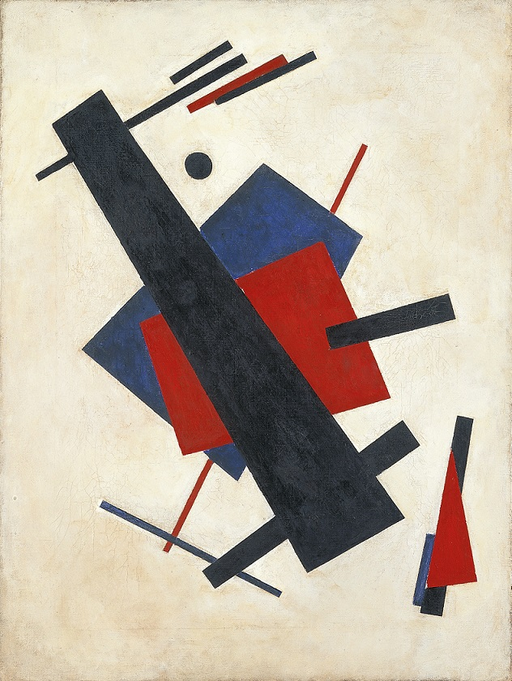

Nikolai Suetin was a Russian Suprematist artist. He worked as a graphic artist, a designer, and a ceramics painter. Nikolai Suetin is generally considered one of the leading Suprematist artists.
It was Suetin who discovered his own way of introducing Suprematism into volume and then into architecture through development of formal methods of arranging exhibition interiors. In all those quests and findings it is easy to trace Suetin's individual conception of form creation, though, inseparable from Malevich's Suprematism. It also had its own impact on Malevich's evolutionary conception of form. Most of the alterations in creative quests of Malevich in 1927-35 (return to figurative compositions, search for Suprematist "ornament") are inexplicable if you leave out personal conception of form with Suetin who was not only beside Malevich all those years but tangibly influenced the development of volumetric Suprematism on the whole.